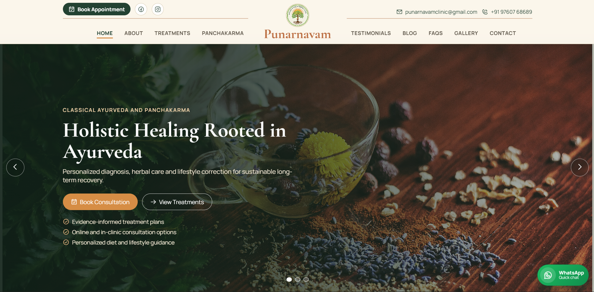
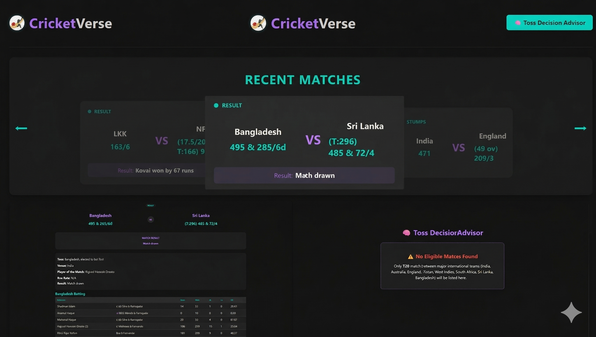
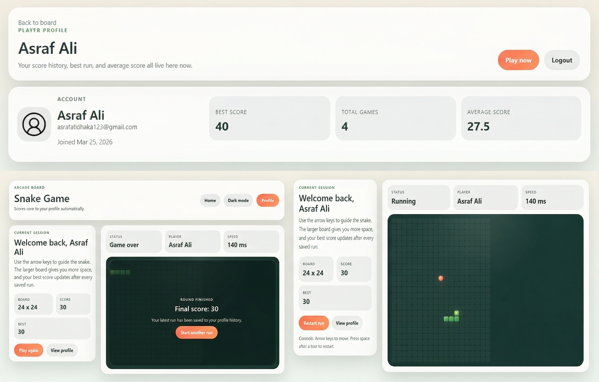
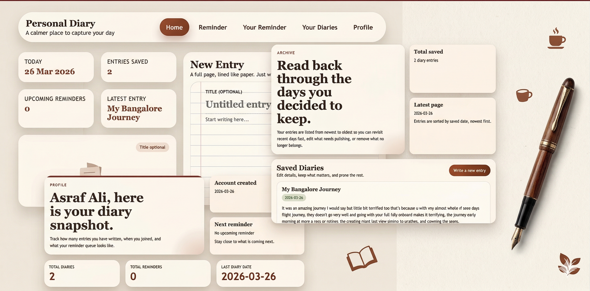

Master of Computer Applications (MCA)
Focused on advanced application development, problem solving, and building stronger foundations across AI/ML and full-stack engineering.
AI/ML and full-stack developer focused on building data-driven, scalable products with clean architecture and practical impact.
Loaded
Stable
Open to full-time roles & freelance work
Analytical developer with a strong foundation in data structures, Python, and full-stack engineering.
I build AI/ML and web solutions that focus on reliability, automation, and real-world usability.
Actively seeking impactful software roles while continuing selective freelance web development projects.
Bangalore, Karnataka, India
Available Now
AI/ML Intern | Full-Stack Developer
I'm Md Asraf Ali, an MCA student at PES College and a BCA graduate from Dayananda Sagar College, Bangalore.
As an AI/ML Intern at BLP Industry-ai, I worked on Django-based learning pipelines, model retraining automation, and Dockerized workflows.
I also supported computer vision workflows using ROI and annotation-based validation for improved image accuracy.
Core focus areas:
#AI/ML, Deep Learning, NLP, Computer Vision
#React, Django, Node.js, Express.js, MongoDB, SQL
#Data analytics with NumPy, Pandas, Scikit-learn, TensorFlow, and Keras
EDUCATION
My academic path has been closely tied to practical project work, with each degree pushing me toward stronger software engineering and product-building skills.
Focused on advanced application development, problem solving, and building stronger foundations across AI/ML and full-stack engineering.
Built my base in programming, databases, and web application development while turning classroom concepts into practical projects.
EXPERIENCE
I am building toward a full-time software role while also taking on focused freelance work that lets me ship real products for clients.
These experiences reflect both my internship foundation and my ability to deliver independently.
Hands-on experience across Django workflows, model retraining, and computer vision validation pipelines, including internship work on a rent prediction project for practical ML application.
Completed hands-on industrial robotics training in Bangalore with strong exposure to robot programming, simulation, safety, and automation workflows.
Built and launched Punarnavam, a React.js web application for an Ayurveda-focused brand. The project is live today and currently frontend-only, with backend work planned for a later phase.

PROJECTS
A showcase of AI/ML and full-stack projects focused on automation, analytics, and scalable application design.
Click any project card to open an in-page overview with screenshots, highlights, and project links.

Full-stack cricket analytics platform with live match insights and interactive user experience.

Browser-based Snake game built with Angular and TypeScript with decoupled UI/gameplay architecture.

Full-stack personal diary application with secure note management, user authentication, and responsive interface.
SKILLS
End-to-end web application development using modern frontend and backend frameworks with clean architecture.
Building and integrating machine learning workflows for predictions, automation, and production-ready model updates.
Data cleaning, analysis, and visualization for extracting actionable insights from structured and unstructured datasets.
Experience building ROI-based validation and annotation pipelines to improve image identification accuracy.
Containerized development and version-controlled delivery for stable, collaborative, and reproducible project workflows.
Building secure backend services and data layers with practical schema design, API integration, and persistence management.
Project Overview